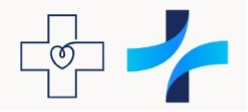

The group came up with the idea for each member to create some logos in their own taste and then all together to decide which one looks best. I created these two with the ideas of a plus sign +. I connect it with health and positivity. I kept it in the color pallet from the stylescapes by using a blue color, and as well it is very easily remembered for our target audience.
Posters

For the first poster I made, I wanted to match the theme of the band Nasmak’s website.
I did some research about the band members so I could include pictures of them, and I also added an image I found online that fit the vibe.
I picked an electric-font because it represents the electric instruments they use, which I thought was important for their audience to notice.

For the second poster, I researched 'postpunk' and 'new wave,' which are the band’s genres.
I noticed that the style for these genres includes sharp and colorful elements, so I chose ones that I thought were appealing and eye-catching.
I also reused the electric font from the first poster to keep some consistency.

This poster has a backstory: Nasmak PM had their very first practice in a chicken coop. To reflect that, I decided to include a chicken in the background
I went with a simple design but added a pop of red for contrast. To make it clear that the poster is for an upcoming event, I added an outline of a concert ticket to display the key information.